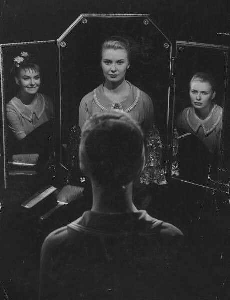

ùêìùê°ùêû ùêåùê®ùêÆùê¨ùêû

For most of my life, I've lived in hiding.
I was the clown of class,
the one who didn't stand out or get perfect grades.
But I knew something that my classmates didn't.
I knew the reality of the world,
how tough it can be.
So, I acted like an idiot,
so they wouldn't know that I knew more of what the reality is.
In grade 11, my English teacher noticed that
(she saw me...I will never see her again.)
I had a better understanding than the average student,
and she praised me a lot.
It made my classmates angry.
When the board exam results came out,
I intentionally failed one subject,
and I pretended to cry,
saying that my dad would send me back to home country.
In reality, I was actually transferring to a better school.
They all believed it.
Now they know that I know more than them,
and they want to be friends,
but I prefer to keep my distance.
But after this mask I created to face people,
my sibling's best friend noticed something was off.
(she saw me...I will never see her again.)
They suggested that I see a doctor.
So, I put on my mask again and acted shy,
pretending like nothing happened.
Deep down, I know there's something wrong with me,
maybe a personality disorder or something.
Even my psychology teacher was scared from me,
(she saw me...I will never see her again.)
but I reassured her that everything was fine.
I convinced her that I'm perfect,
pointing to my assignments as proof.
She believed me, like a fool.
I guess that's how it goes.
There are many anxieties swirling around in my mind.
I see them as dark substances,
slowly spreading through the roots of my thoughts,
poisoning the once hopeful girl inside.
All I know is that my mind is always racing.
It never stops.
Sometimes it feels like my mind is working against me,
like a weapon.
It's the very thing that keeps me alive and well,
but it also brings many challenges to my life.
One of those challenges is my natural tendency
to stay hidden in the shadows,
to be the one who quietly listens as others
speak freely and enjoy the laughter.
It's that sinking feeling in my stomach, the realization that while others smile and shine, I simply stand there, feeling invisible.
(Guys I'm joking don't worry lol)